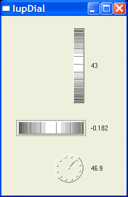

Creates a dial for regulating a given angular variable. It inherits from IupCanvas.
Ihandle* IupDial(char *type); [in C] iup.dial{type: string} -> (elem: ihandle) [in Lua] dial(type) [in LED]tipo: dial type. Can be "HORIZONTAL", "VERTICAL" or "CIRCULAR".
The function returns the identifier of the created dial, or NULL if an error occurs.
FGCOLOR: Controls the foreground color. The default value is "64 64 64". The foreground color is not used for the circular dial.
BGCOLOR: Controls the background color. The default value is the parent or the dialog background color.
DENSITY: Contains average value of the number of lines per pixel in the dial. The purpose of this attribute is to maintain the control’s appearance when its size changes. Default is "0.2".
UNIT: Contains the unit of the angle. Can be "DEGREES" or "RADIANS". Default is "RADIANS".
VALUE: Contains the dial value in a given moment. The value is an angle starting at zero when the interaction started.
TYPE: Informs whether the dial is "VERTICAL", "HORIZONTAL" or "CIRCULAR".
EXPAND: The default is "NO".
SIZE: the default is "16x80", "80x16" or "40x35" according to the dial type.
MOUSEMOVE_CB: Called each time the user moves the dial with the mouse button pressed. The angle the dial rotated since it was initialized is passed as a parameter.
int function(Ihandle *self, double angle); [in C] elem:mousemove_cb(angle: number) -> (ret: number) [in Lua]
BUTTON_PRESS_CB: Called when the user presses the left mouse button over the dial. The angle here is always zero, except for the circular dial.
int function(Ihandle *self, double angle) elem:button_press_cb(angle: number) -> (ret: number) [in Lua]
BUTTON_RELEASE_CB: Called when the user releases the left mouse button after pressing it over the dial.
int function(Ihandle *self, double angle) elem:button_release_cb(angle: number) -> (ret: number) [in Lua]
When the keyboard arrows are pressed and released the mouse press and the mouse release callbacks are called in this order. If you hold the key down a mouse move callback is also called.
When the wheel is rotated only the mouse move callback is called, and it increments the last angle the dial was rotated.
In these cases the value is incremented by PI/10 (18 degrees).
Creates several Dials and shows each dial’s value in a Label.
